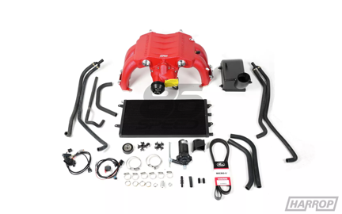
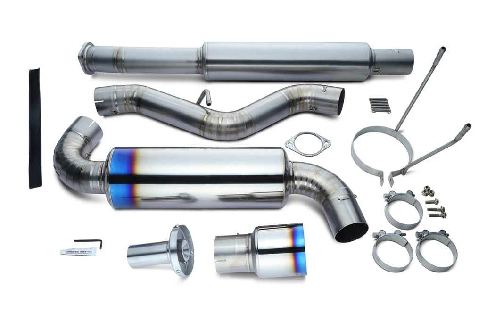

| Name | Price | Description | action | |
|---|---|---|---|---|
|  | Supercharger Kit | $5,000.00 | "Given the success of our industry leading TVS1320 Supercharger Kit for the FA20 engine, our engineering team have designed and developed a TVS1320 Supercharger to suit the FA24 found in the new Toyota GR86 and Subaru BRZ platforms. Designed and manufactured to OE standards, the front drive / front inlet design allows for a shorter less restrictive intake path allowing for improved air flow and superior performance. The integrated design utilising two high density water to air intercoolers provides optimal air distribution over the intercooler face. Installation is of OE appearance and fitment, leveraged from designing and supplying OE supercharger programs including Ford and Lotus. | Buy Now |
|  | Tomei Catback Exhaust | $1,300.00 | Tomei has really done it this time. Notice a lack of a certain word in the title of this product? The missing word is tip. That word is missing because this is an entire Titanium exhaust at a very affordable price. Tomei starts with the very best in raw materials and takes it to the next level. This exhaust is about one thing and one thing only; performance. They have started by stripping the weight down to what feels like nothing compared to the stock exhaust. They did this by using titanium over steel and making the exhaust as straight as possible. Less bends means less materials used. They even went so far as to think about the extra weight regular style flanges add, so they went ahead and went with a weight-saving spring and clamp setup. So not only do you get the performance you expect from a Tomei product, you get the bragging rights too. | View Features |